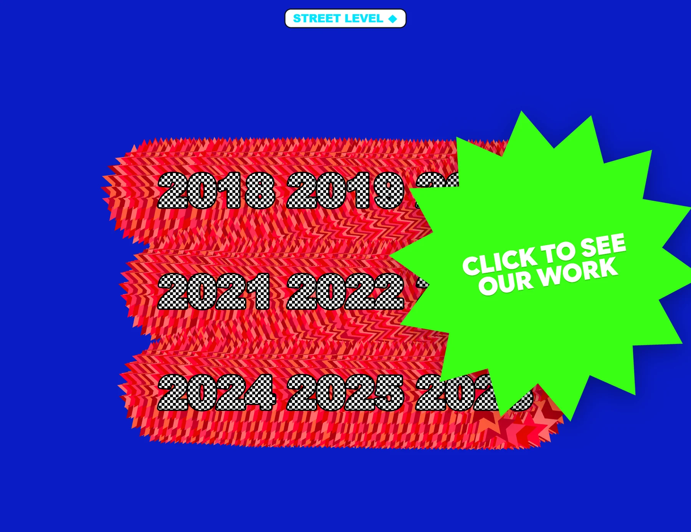
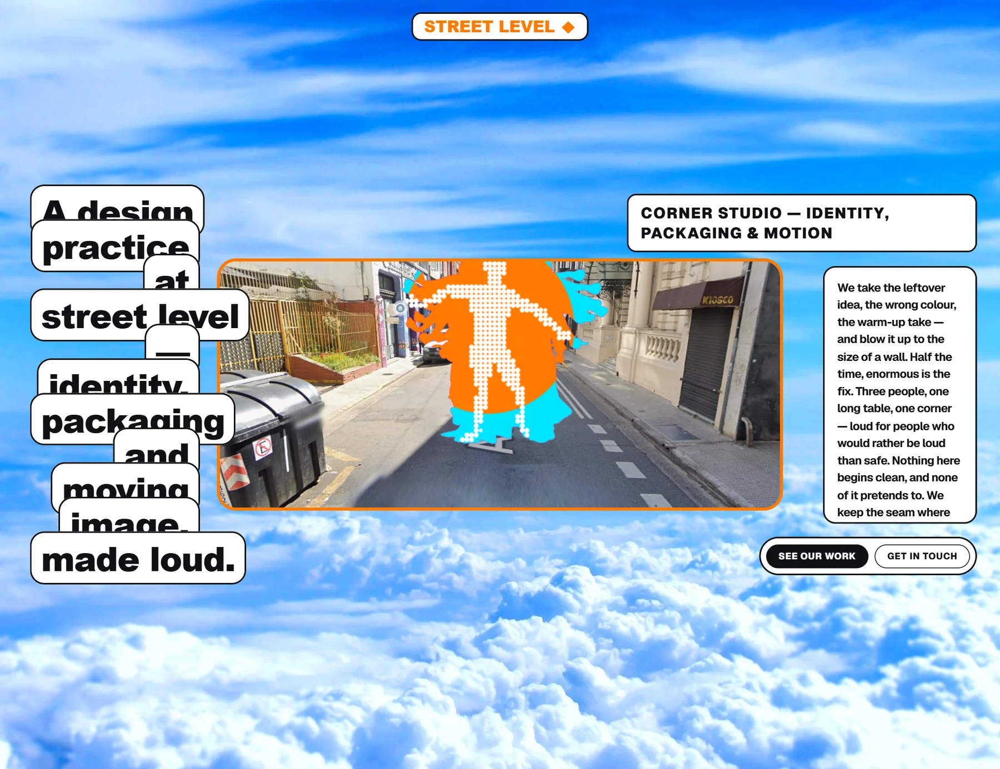
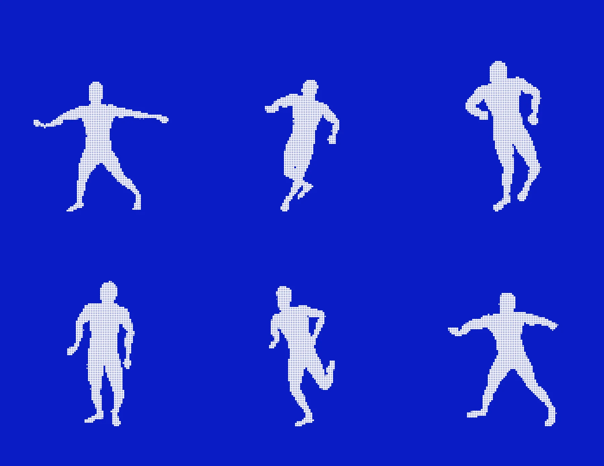
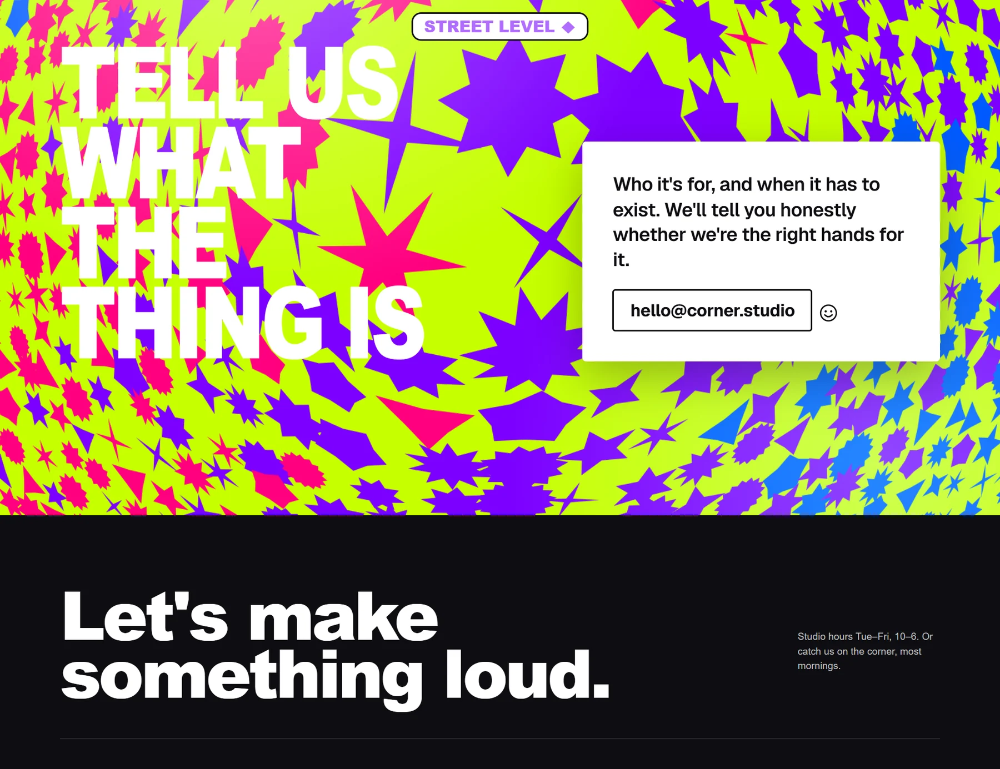
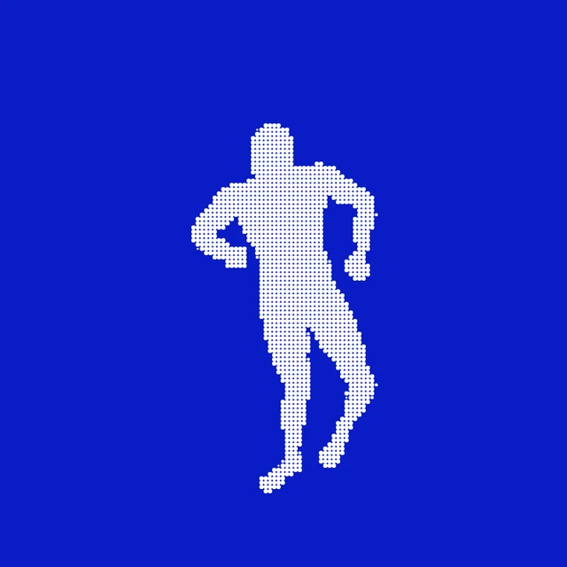

Street Level es el sitio de Corner Studio, un estudio de identidad, packaging y motion. El trabajo se cuenta como una grilla de años, de 2018 a 2026, con números en damero extruidos sobre azul y un sello en estrella que invita a entrar.

El sitio habla como el estudio: toma la idea que sobró, el color equivocado, la toma de ensayo, y la infla al tamaño de una pared. Titulares en cajas apiladas, una foto de la calle y colores que no piden perdón.
A veces, lo enorme es la solución. Se deja la costura a la vista.

El protagonista es un modelo 3D animado con diez clips de movimiento — hip hop, rumba, uprock, robot, swing, salto y más — renderizado con Three.js y reducido a una trama de puntos con una matriz Bayer de 4×4.
Al moverse deja un rastro: una máscara que se acumula y revela el negativo de una foto de la calle.

Del azul liso de los años a un contacto sobre un campo de estrellas lima, violeta y magenta; del cielo de la portada a páginas por año, cada una con su método. GSAP y Lenis llevan el scroll, y Vite lo compila todo.
